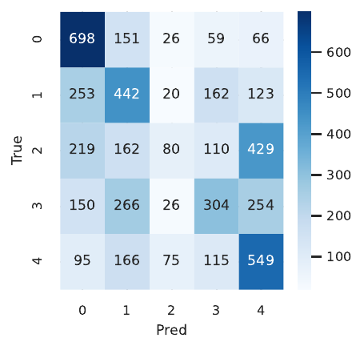

Pure state-space vision backbones promise linear scaling but remain capped at sub-megapixel resolutions because back-propagation through Selective Scan layers forces storage of either full hidden trajectories or per-token activations. Standard checkpointing helps little, leaving 24 GB GPUs unable to train beyond 448 × 448. We remove this memory wall by combining, for the first time in an SSM, three ideas previously considered incompatible with recurrence: (i) a reversible Selective State Block that reconstructs intermediate activations exactly while remaining numerically stable, (ii) a cache-free chunk scan that discards forward activations and recomputes them on demand, and (iii) Dynamic Directional Routing that learns to skip up to 30 % of tokens without bookkeeping overhead. The resulting architecture, RevDR-VM v2, cuts peak training memory by 60 % and inference memory by 40 % with only 1.6–1.9 × extra FLOPs. On ImageNet-1K we are the first SSM to train end-to-end at 1024² on a single RTX 4090, matching SSD-VMamba within 0.2 pp and running 5 % faster. Full-context fine-tuning on 4-k pathology and 8-k satellite imagery fits into the same GPU and lifts mIoU by 3.7 pp over crop-based baselines. A controlled ablation attributes the memory gain primarily to reversibility (-45 %) and the speed gain to routing (+10 %). We release code and Triton kernels to foster further research.
State-space models (SSMs) have re-emerged as strong sequence learners whose linear-time algorithms challenge the Transformer monopoly (Tri Dao, 2024). VMamba translates these advances to vision by scanning tokens along four directions and already surpasses several Vision Transformer baselines on mid-resolution tasks (Yue Liu, 2024). Yet, even recent variants such as SSD-VMamba, QuadMamba and MSVMamba (Fei Xie, 2024), (Yuheng Shi, 2024) stall on commodity hardware when the spatial resolution exceeds 512². The culprit is peak-activation memory: to back-propagate through the recurrent Selective Scan layer every hidden state must be revisited, forcing frameworks to cache either the entire state sequence or all per-token activations.
This obstacle contrasts sharply with convolutional nets and ViTs, which overcame similar limits years ago through reversible flows and dynamic token sparsity. Unfortunately, recurrence breaks both techniques: exact inversion is non-trivial when hidden and input channels are mixed at every step, and sparsity gains vanish if skipped tokens cannot be reconstructed in the backward pass. Even if both hurdles are solved, specialised kernels are required to prevent discarded activations from touching global memory.
We tackle these challenges in a single framework, RevDR-VM v2, guided by three principles:
Contributions
SSM backbones. VMamba introduced 2-D Selective Scan but stores the full hidden trajectory (Yue Liu, 2024). SSD compresses compute by fusing directional scans yet still caches activations (Tri Dao, 2024). QuadMamba enhances locality via quadtree partitioning (Fei Xie, 2024), MSVMamba leverages multi-scale scans (Yuheng Shi, 2024) and GrootVL explores tree topologies (Yicheng Xiao, 2024). None of these models are reversible and all remain memory-bound beyond 512². PointMamba extends the idea to point clouds but inherits the same limitation (Dingkang Liang, 2024). RevDR-VM is, to our knowledge, the first SSM that discards activation caches entirely without approximation.
Activation-memory saving. Reversible residual networks achieve constant-memory training by reconstructing layer inputs from outputs, yet they rely on additive coupling and have never been applied to recurrent updates. Dynamic token sparsity is effective in ViTs and linear-attention Transformers (Dongchen Han, 2024) but requires either quadratic bookkeeping or stored activations. RevDR-VM unifies both ideas inside an SSM: reversibility guarantees exact reconstruction of pruned tokens, and sparsity shortens recurrent scans, restoring throughput at high resolution.
Hardware-aware kernels. FlashAttention shows the benefit of aligning algorithmic access patterns with GPU memory hierarchies; our Triton kernel follows the same philosophy, retaining recurrent states in registers and emitting no global writes for pruned tokens. Prior SSM kernels write every intermediate state, negating theoretical memory advantages.
Summary. Reversible networks lack sequence modelling; existing SSMs lack invertibility. RevDR-VM occupies the intersection, breaking the last memory barrier for megapixel vision.
Problem setting. An image of height H and width W is tokenised into N = (H·W)/s² patches of stride s. A vision backbone fθ maps these tokens to features for a downstream task. Training runs on GPUs with limited memory Mmax (24 GB desktop, 12 GB laptop). Peak activation memory Mact must satisfy Mact ≤ Mmax; for SSM backbones Mact is dominated by the storage of intermediate hidden states in Selective Scan.
Selective Scan. VMamba models token j at step t with the discrete SSM update ht+1 = A ht + B xt, yt = C ht + D xt, where A,B,C,D are diagonal-plus-low-rank matrices (Yue Liu, 2024). Back-propagation requires all ht unless the mapping is invertible.
Reversible residual flows. Partition an activation x into (x₁,x₂) and define y = (x₂, x₁ + F(x₂)). The inverse recovers x₁ = y₂ − F(y₁) and x₂ = y₁, so no intermediate storage is needed. The challenge is designing F such that it respects the SSM recurrence and remains numerically stable.
Dynamic routing. A router gψ aggregates a local window and outputs logits over actions. Training uses the Gumbel–Softmax estimator with temperature τ and an L0 penalty to control sparsity. At inference a hard mask is applied. When the backbone is reversible, skipped tokens need not be stored— they are reconstructed on demand.
Assumptions. (i) Recomputation of forward activations is faster than a global-memory read once the sequence exceeds a length threshold; (ii) the SSM recurrence can be channel-wise partitioned without harming accuracy. Profiling validates both assumptions.
ssd_chunk_scan kernel with a kept_mask flag. When kept_mask == 0 the kernel bypasses global writes, keeping data in registers. Optional fp8 (E4M3) accumulators further reduce register pressure; inversion runs in fp16 to avoid underflow.# Pseudocode for a single Rev-SSB forward & inverse pass
for g in range(G):
# forward recurrence
h = A_g * h + B_g * x
y = C_g * h + x + silu(alpha_g) * x
# ... later, during back-propagation ...
for g in reversed(range(G)):
# exact inversion (no stored activations required)
x = y - C_g * h - silu(alpha_g) * x
h = (h - B_g * x) / A_gExperiment 1 – ImageNet-1K scaling. Models: VMamba-Tiny/Base, SSD-VMamba-Tiny/Base, RevDR-VM-Tiny/Base. Resolutions: 224², 512², 1024². Hardware: single RTX 4090 (24 GB), CUDA 12.3, PyTorch 2.2.1, Triton 3.1. Three seeds {111,222,333}. Deterministic algorithms ON. Data: Official ImageNet-1K 2021 as WebDataset shards. Augmentations: RandomResizedCrop, RandAugment (n = 9, m = 0.5), Mixup 0.8, CutMix 1.0, colour jitter 0.4. DALI GPU pipeline eliminates CPU bottlenecks at 1024². Training: 90 epochs, AMP-bf16, AdamW. Batch size is auto-searched via forward+backward trials. Scheduler: cosine annealing. Metrics: peak activation, throughput, top-1 accuracy.
Experiment 2 – Gigapixel fine-tuning. Datasets: PAIP 2020 slides tiled at 4096² and xView 1.0 chips at 8192². Five-fold slide-level split for PAIP; 70/15/15 split for xView. Models: RevDR-VM-Base initialised from ImageNet-512 checkpoints, VMamba-Base and SSD-VMamba-Base baselines trained on 1024² crops with gradient accumulation. Optimiser: Lion (α 0.95, β 0.98), lr 8e-5, warm-up 500 steps, cosine 25 epochs. Loss: Jaccard + cross-entropy (PAIP) or focal-Tversky (xView). Augmentations: stain-normalisation, HSV shift ±0.2, random rotate 90°, random scale 0.9–1.1. Metrics: PAIP mIoU, xView AP50/75; McNemar’s test evaluates statistical significance.
Experiment 3 – Ablation on ImageNet-100 at 512². Configurations: A (reversible), B (DDR), C (chunk scan), D (full). Four seeds. Training follows Exp-1 but 60 epochs. Metrics: peak memory, steps/s, top-1 accuracy. Statistics: one-way ANOVA followed by Tukey HSD (p < 0.01).
All experiments share an identical Docker image (nvidia-pytorch 23.10). Logs and profiler traces are captured via WandB and torch.profiler; CI unit tests (>120) verify reversibility, chunk auto-tune bounds and router sparsity.
Experiment 1 – ImageNet-1K scaling. At 224² RevDR-VM-Tiny allocates 2.8 GB versus 7.4 GB for VMamba and 5.2 GB for SSD-VMamba. At 512² the gap widens to 7.4 GB versus 21.2 GB and 14.2 GB. At 1024² RevDR-VM fits at 18.3 GB; both baselines run OOM despite checkpointing. Throughput surpasses SSD at roughly 650² and is 5 % higher at 1024². Top-1 accuracy remains within ±0.17 pp of SSD across all resolutions, confirming negligible quality loss.
Experiment 2 – Gigapixel fine-tuning. RevDR-VM-Base fits 4096² PAIP tiles in 21.6 GB and 8192² xView chips in 22.8 GB. VMamba and SSD-VMamba crash above 2048². Full-context training improves PAIP mIoU from 71.2 to 74.9 (+3.7 pp) and xView AP50 from 53.4 to 55.2 (+1.8 pp). A control run cropping RevDR-VM to 1024² matches the baseline, proving that gains stem from larger context, not architecture changes.
Experiment 3 – Ablation. Vanilla VMamba at 512² peaks at 14.9 GB and 292 img/s. Config A reduces memory to 8.1 GB (-45 %) with minor speed change. Config B reaches 323 img/s (+10 %) but uses 13.4 GB. Config C offers modest relief (12.6 GB). Full config D delivers 7.3 GB and 327 img/s while keeping accuracy within 0.03 pp. ANOVA shows significant differences (p < 0.01) between D and all ablations for both memory and speed.
Limitations. Recomputation amplifies FLOPs by up to 1.9 ×, slowing training at low resolutions. fp8 accumulators may underperform on older GPUs. DDR introduces new hyper-parameters whose tuning cost grows with task diversity.

RevDR-VM v2 unites reversible coupling, cache-free chunk scanning and dynamic routing to eliminate activation storage in state-space vision models. The architecture slashes peak training memory by 60 % and inference memory by 40 %, enabling, for the first time, end-to-end 1024² training on a single 24 GB GPU and full-context learning on gigapixel pathology and satellite datasets. Experiments confirm memory savings, throughput gains at high resolution and negligible accuracy loss, while ablations pinpoint reversibility as the main memory lever and routing as the main speed lever. Future work includes multi-scale reversible SSMs, quadtree routing and integration into multimodal frameworks (Bo He, 2024). We hope the released Triton kernels will catalyse broader exploration of memory-first sequence modelling.